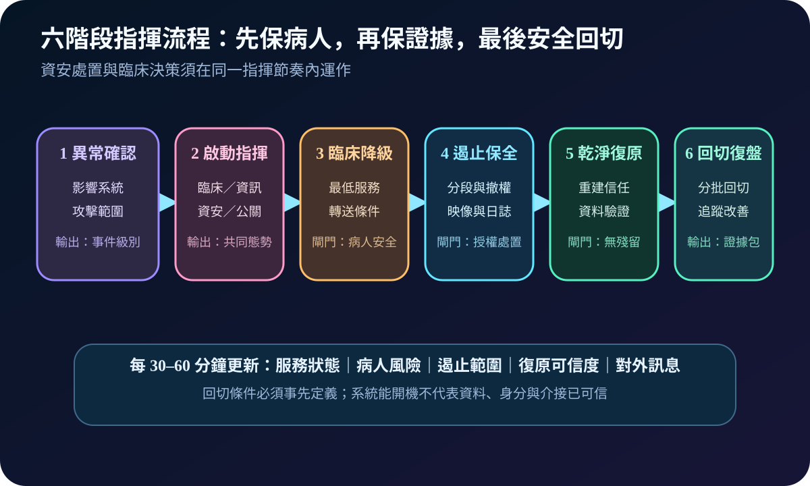
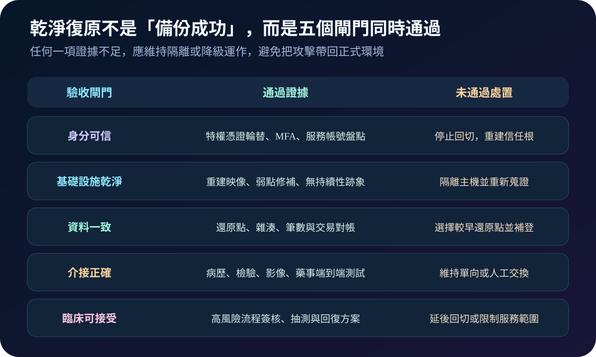

醫療資安國際觀察 · 2026-08-21
醫療勒索事件下，臨床服務如何不中斷：從停機模式到乾淨復原
作者：Dr. William｜醫療資訊與資安治理實務工作者
勒索事件值得醫院關注的原因，不只在於資料被加密或外洩，而是病歷、檢驗、影像、藥事與轉診可能同時中斷。治理重點應從「是否付贖金」前移到：停機時仍能安全照護、事件能被指揮、復原環境能證明可信。
名詞解釋：四個概念決定臨床韌性
double extortion 是同時以資料加密與外洩威脅施壓；downtime 是資訊系統不可用時的替代作業模式；incident command 是由單一指揮節奏協調臨床、資訊、資安、法遵、供應商與對外溝通；clean recovery 則要求身分、主機、資料及介接都完成可信驗證，不是備份能開機就算復原。
國際現況與適用邊界
美國 CISA、FBI 與 HHS 於 2026 年 8 月 18 日更新 Medusa 聯合通報，納入截至 2026 年 4 月的調查資訊，指出該勒索服務採雙重勒索，並將醫療與公共衛生列為相關部門；通報要求優先處理已知弱點、網路分段及離線且不可抹除的備份。FBI《2025 IC3 Annual Report》亦指出，其統計中的主要勒索變種影響部門包含醫療與公共衛生。這些資料反映美國通報與案件觀察，不能直接轉寫成台灣醫院的法定義務、通報期限或強制控制。
台灣適用方式：國際通報可作為威脅情境、檢測內容與演練輸入；法律義務、通報程序、病歷保存及個資處理仍應依台灣主管機關公告、契約與機構風險評估確認。
規劃：把病人安全寫進事件目標
規劃範圍應涵蓋核心臨床服務、身分控制面、醫療設備、介接、備份及委外連線。事件指揮架構須指定指揮官、臨床安全負責人、技術遏止、證據保全、法遵通報、供應商協作與對外訊息角色。驗收可量測停機流程啟動時間、最低服務可維持時間、紙本資料補登正確率、隔離決策時間、乾淨還原通過率及改善關閉率。

實作：由一條高影響服務路徑開始
- 建立停機包：準備離線聯絡表、紙本表單、病人辨識、用藥核對、檢驗回報及補登規則。
- 演練雙重衝擊：同時注入資料外洩與系統加密情境，測試決策是否被贖金議題綁架。
- 分離復原權限：備份管理、正式網域與安全監控採不同身分與核准路徑，定期測試不可抹除副本。
- 驗證乾淨環境：先重建身分信任，再檢查弱點、惡意持續性、資料一致性與端到端臨床介接。
- 分批回切：依臨床關鍵度逐段恢復，保留降級方案與回退點，持續監看異常。
風險：快速上線可能再次引入攻擊
常見失敗包括停機表單過期、紙本補登無人負責、隔離命令未評估病人安全、備份與正式環境共用管理權，以及只驗證檔案存在而未驗證身分與介接。美國 HHS OIG 於 2026 年對醫院控制的稽核也把「網攻期間維持病人照護」納入檢視；其發現與建議屬特定美國受查機構，不代表台灣法規要求，但可用來設計本地驗收問題。

可執行清單
- 高影響服務是否都有可在無網路情境使用的停機流程與聯絡表？
- 事件指揮是否同時涵蓋臨床安全、技術遏止、證據、法遵與對外訊息？
- 備份是否離線或不可抹除，且管理權與正式環境分離？
- 還原演練是否驗證身分、資料、介接與補登，而非只驗證開機？
- 每次演練缺口是否有責任人、期限、複測與風險接受層級？
來源
- CISA、FBI、HHS｜#StopRansomware: Medusa Ransomware（原發布：2025-03-12；更新：2026-08-18；查閱：2026-08-21）
- FBI IC3｜2025 IC3 Annual Report（報告年度：2025；文件日期：2026-04-16；查閱：2026-08-21）
- HHS OIG｜A Large Southeastern Hospital Could Improve Certain Security Controls（發布：2026-01-30；查閱：2026-08-21）
- NIST SP 800-61 Rev. 3｜Incident Response Recommendations and Considerations（發布：2025-04；查閱：2026-08-21）
內容說明
本文依健康台灣深耕計畫相關治理內容整理，並參考美國官方威脅通報、稽核與事件回應資料，提出台灣醫療機構可採用的規劃與驗收框架；不取代主管機關正式公告、法律意見或個別醫院風險評估。